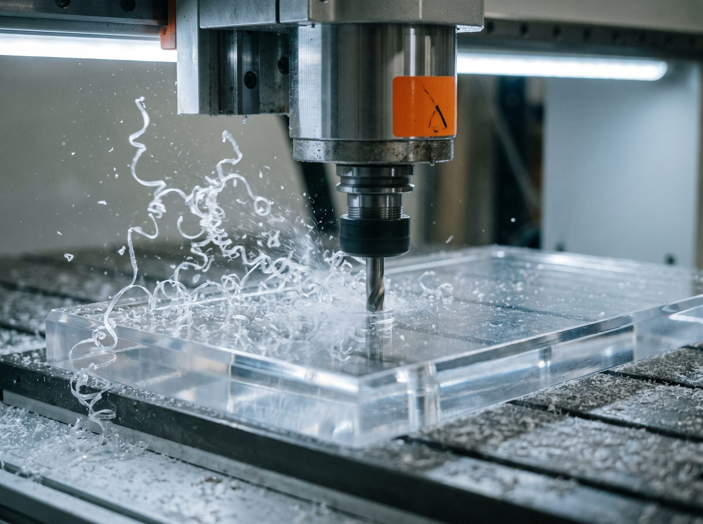
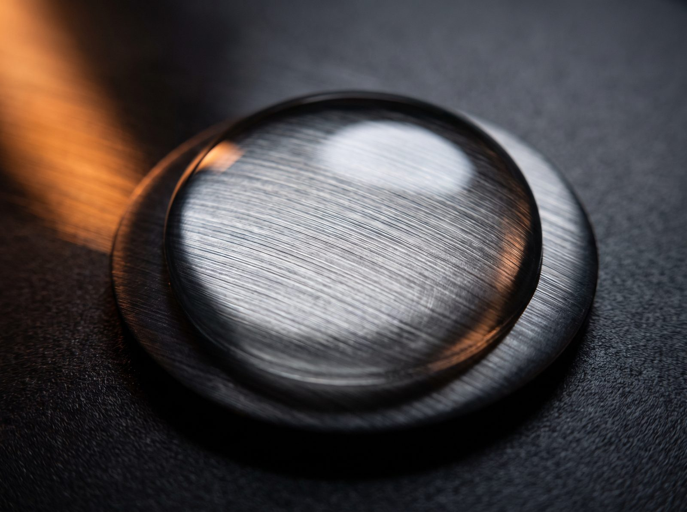
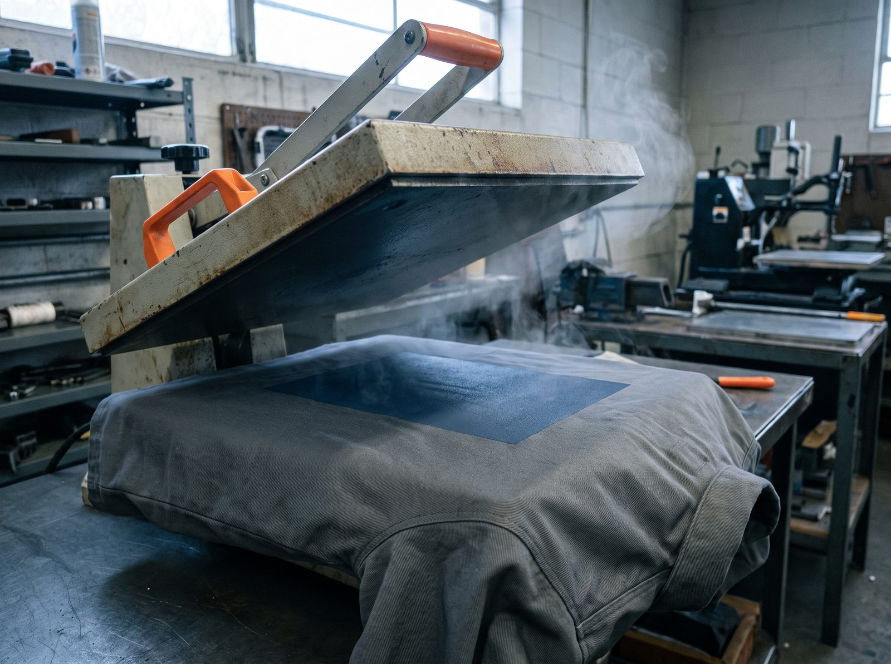
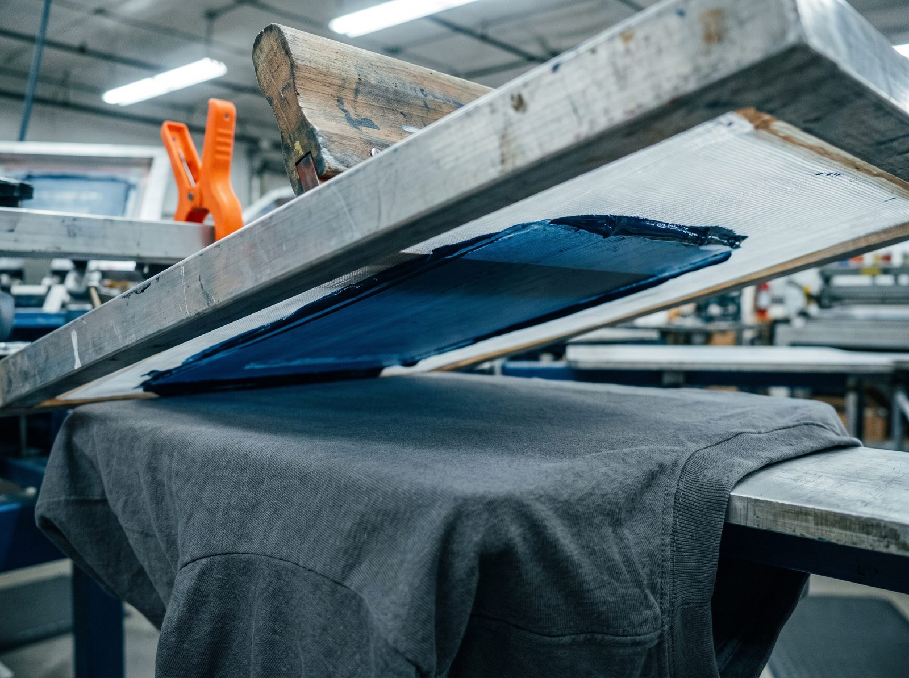

Ropa laboral · EPI
Uniforme de empresa marcado
Marca discreta y resistente sobre prenda de trabajo, con aguante al uso y al lavado industrial.
Técnica: serigrafía / DTF / bordado · Serie: media
Una muestra del trabajo del taller por técnica y aplicación. Marcaje sobre producto, componente, envase, señalética y prenda —lo que producimos cada semana para empresas de Valencia y Levante.
Ejemplos de trabajo del taller · los casos con nombre de cliente y cifras se publican solo con su permiso
Marca discreta y resistente sobre prenda de trabajo, con aguante al uso y al lavado industrial.
Técnica: serigrafía / DTF / bordado · Serie: media

Paneles de dirección y señalización permanentes, legibles y conformes a norma.
Técnica: UVI / fresado · Norma: según ISO 7010

Marcaje a color sobre geometría curva y flexible, con registro constante en tirada larga.
Técnica: tampografía · Serie: media-alta

Grabado permanente para identificación y trazabilidad que sobrevive al proceso y al uso.
Técnica: láser · Aplicación: trazabilidad

Corte y fresado CNC de precisión para señalética y expositores en tiradas cortas, sin coste de pantalla.
Técnica: fresado CNC · Tolerancia: ±0,1 mm

Etiqueta con relieve y resistencia química para maquinaria y producto en entornos exigentes.
Técnica: doming PU · Resistencia: alta

Transferencia de logotipos a todo color y detalle fino sobre prenda de trabajo y textil técnico.
Técnica: DTF · Color: full color

Marcaje resistente para uniforme y ropa laboral, con aguante al uso y al lavado.
Técnica: serigrafía textil · Serie: media-alta
Imágenes de trabajos reales del taller. Materiales, plazos y series se confirman según cada pieza. Estimación orientativa, sujeta a brief.